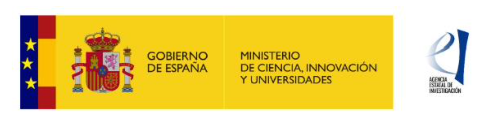

Pietro Manzoni
 |
UNIVERSITAT POLITÈCNICA DE VALÈNCIADepartment of Computer Engineering (Dpt. de Informática de Sistemas y Computadores) School of Informatics (Escuela Técnica Superior de Ingeniería Informática) My page @ UPV, Google scholar, ResearchGate; Scopus Research Ids: Orcid; ResearchId |
Pietro Manzoni is a computer engineering professor at the "Universitat Politècnica de València," Spain. He received a master's degree in Computer Science from the "Università degli Studi" of Milan, Italy, in 1989 and a Ph.D. in Computer Science from the "Politecnico di Milano," Italy, in 1995. From November 1992 to February 1993, he was an intern at Bellcore Labs, Red Bank, New Jersey, USA. From February 1994 to November 1994, he was a visiting researcher at the ICSI (International Computer Science Institute) Berkeley, California, USA.
His research has always been focused on using Mobile Wireless Networks to create dynamic systems. Currently, he is developing solutions for the Internet of Things using LPWAN networks and Pub/Sub systems. These solutions have various applications, including environmental intelligence by integrating TinyML based solutions, sustainable and green IoT, and Smart Tourism. Additionally, he is interested in exploring different aspects of network pluralism and finding ways to provide integrated connectivity in the edge cloud continuum.
He is the coordinator of the Computer Networks Research Group (GRC), a senior member of the IEEE, and a member of the IEEE Technical Committee on Hyper-Intelligence, the IEEE SIG on Metaverse, and the ACM SIGCAS - Computers and Society.
Teaching
- Redes y Seguridad - (Networks and Security), Master in Informatics Engineering, EtsINF. (in spanish)
- Sistemas Basados en Redes Móviles - (Mobile Networks based Systems), Master in Computer Engineering, DISCA. (in spanish)
- Others seminars and courses.
Publications:
Current projects:
|
ATLAS: Investigación y Desarrollo de un dispositivo de medida y control inteligentes para la mejora de la eficiencia del riego mediante la integración de tecnología satelital e inteligencia artificial / Research and Development of an intelligent measurement and control device to improve irrigation efficiency by integrating satellite technology and artificial intelligence." (CPP2021-008722)
|
|
|
REMARKABLE: "Rural Environmental Monitoring via ultra wide-ARea networKs
And distriButed federated Learning" (Grant agreement ID: 101086387)
|
|
|  |
CHAN-TWIN - Changing the tourism: a digital twin strategy for sustainable development of smart protected natural areas through ecological indicators (TED2021-130890B-C22)
|
|
INSITU: "INtelligent Sensing systems for ecosystems, Sustainable mobilITy and Urban spaces" (PID2021-122580NB-I00)
|
|
|
SMARTLAGOON: "Innovative modelling approaches for predicting socio-environmental evolution in highly anthropized coastal lagoons" (Grant agreement ID: 101017861)
|
|
|
GLOBALoT: "Desarrollo de infraestructuras IoT de altas prestaciones contra el cambio climático basadas en inteligencia artificial / Development of high-performance IoT infrastructures against climate change based on artificial intelligence" (SRTC1900C007159XV0)
|
Editorial Boards
Journal Editorial Board Member:
- "ACM Computing Surveys," ACM Publishing. (Impact Factor: 14.324)
- "Vehicular Communications," Elsevier. (Impact Factor: 8.373)
- "Digital Communications and Networks," KeAi Publishing. (Impact Factor: 6.348)
- "Sensors," MDPI. (Impact Factor: 3.847)
- "IEEE Transactions on Green Communications and Networking," IEEE ComSoc. (Impact Factor: 3.525)
- "Electronics," MDPI. (Impact Factor: 2.690)
- "Wireless Communications and Mobile Computing," Hindawi-Wiley. (Impact Factor: 2.146)
Journal Guest Editor (last 5 years):
- Computer Networks, Elsevier, Special Issue on “Pub/sub solutions for interoperable and dynamic IoT systems”. Submission deadline: Submission deadline: 30 August 2022.
- Frontiers, Loop, Research Topic on "SDN migration challenges and practices in ISP/Telcos" Networks. Submission deadline: open.
- ITU Journal, ITU, Special issue on "Network virtualization, slicing, orchestration, fog and edge platforms for 5G and 6G wireless systems". Submission deadline: 25 July 2022.
- Sensors, MDPI AG. Special Issue on "Sustainable Environmental Sensing Systems". Submission deadline: 31 December 2022.
- Electronics, MDPI AG. Special Issue on "Resilience in IoT Networks". Submission deadline: CLOSED (31 May 2022.)
- Digital Communications and Networks, KeAi. Special Issue on "Green Communications and Computing for 6G". Submission deadline: CLOSED; Publication date: May 2022.
- Physical Communication, Elsevier, Special Issue on "Architecture, protocols and management of indoor wireless communications". Submission deadline: CLOSED; Publication date: May 2022.
- Sensors, MDPI AG. Special Issue on "AI for IoT". Submission deadline: CLOSED (31 December 2021).
- IEEE Internet of Things Journal, "Special Issue on Sustainable Solutions for the Internet of Things". Submission deadline: CLOSED (15 April 2021).
- Sensors, MDPI AG. Special Issue on "Cloud and Edge Computing for the Next Generation of Internet of Things Applications", Submission deadline: CLOSED (30 September 2020).
- Sensors, MDPI AG. Special Issue on "Pub/Sub Solutions for IoT", Submission deadline: CLOSED (29 February 2020).
- Future Internet, MDPI AG. Special Issue on "IoT for Development (IoT4D)", Submission deadline: CLOSED (15 June 2019).
- Sensors, MDPI AG. Special Issue on "Pervasive Intelligence and Computing", Submission deadline: closed (15 November 2018), associated to The 16th IEEE PiCom 2018.
- Sensors, MDPI AG. Special Issue on "Smart Vehicular Mobile Sensing", Submission deadline: closed (15 March 2018).
- International Journal of Distributed Sensor Networks, SAGE. Special Collection on "Smart Objects for the Internet of Things", Submission deadline: closed (March 2018).
Conferences Organization (last 5 years)
2023
- Works in Progress co-chair, CCNC 2023, The 20th Annual IEEE Consumer Communications & Networking Conference, January 2023, Las Vegas, USA.
- General co-chair, ICC-MetaNC, ICC'23 1st Workshop on Metaverse-based Networking and Computing, 28 May – 01 June 2023 // Rome, Italy
- General co-chair, International Symposium on Green Technologies and Applications (ISGTA 2023), May 29th to 31th, 2023 in Casablanca, Morocco
- Workshop co-Chair, IEEE International Conference on Metaverse Computing, Networking and Applications (IEEE MetaCom 2023), June 26-28 2023, Kyoto
- Workshop co-Chair, 43rd IEEE International Conference on Distributed Computing Systems (ICDCS 2023), July 18-21 2023, Hong Kong
2022
- General co-chair, PICom 2022, The 20th IEEE International Conference on Pervasive Intelligence and Computing (PICom 2022), September 12-15, 2022 - Tyrrhenian Coast of Calabria, Italy.
- Special Track chair, GoodIT 2022, Special Track on IT for Environmental Intelligence (ACM GoodIT 2022), September 7th-9th, 2022, Limassol, CYPRUS.
- General co-chair, NET4us 2022, Workshop on Networked sensing systems for a sustainable society (as part of ACM SIGCOMM 2022), August 22nd-26th, 2022, Amsterdam, Netherlands.
- Workshops co-chair, ICDCS 2022, 42nd IEEE International Conference on Distributed Computing Systems, July 10-13, 2022 - Bologna, Italy.
- Symposium co-chair, IEEE ICC 2022 Next-Generation Networking & Internet, IEEE International Conference on Communications 16–20 May 2022 - Seoul, South Korea.
- Poster Chair, CIOT'2022, 5th Conference on Cloud and Internet of Things, March 28-30, 2022, Marrakech, Morocco.
2021
- Publicity Chair, IEEE/ACM CHASE 2021, IEEE/ACM Conference on Connected Health Applications, Systems, and Engineering Technologies, December 16 - 17, 2021 Washington D.C., USA.
- General co-chair, SESSy 2021, Workshop on Sustainable Environmental Sensing Systems at IEEE Global Communications Conference, 7-11 December 2021 // Madrid, Spain.
- TPC track co-chair, MSN 2021, The 17th International Conference on Mobility, Sensing and Networking, December 13-15, 2021, Exeter, UK.
- TPC co-chair, WiMob 2021, The 17th International Conference on Wireless and Mobile Computing, Networking and Communications, 11- 13 Oct, 2021, Bologna, Italy.
- Posters/Demo Chair, IEEE/ACM DS-RT 2021, The 25th International Symposium on Distributed Simulation and Real Time Applications, September 27-29, 2021, Valencia, Spain
- General co-Chair, ACM GoodIT 2021, ACM International Conference on Information Technology for Social Good, 9-11 September 2021, Rome, Italy.
- Track Chair, PICom 2021, 19th IEEE International Conference on Pervasive Intelligence and Computing (PICom 2021) August 23-26, 2021 - Calgary, Canada.
- Steering Committee Member, CCNC 2021, The 17th Annual IEEE Consumer Communications & Networking Conference, 10-13 January 2021, Las Vegas, USA.
2020
- Work in Progress and PhD Track Chairs, EAI GOODTECHS 2020, 6th EAI International Conference on Smart Objects and Technologies for Social Good, September 14-16, 2020, Antwerp, Belgium.
- General Chair, FRUGALTHINGS 2020 - 1th Workshop on Experiences with the Design and Implementation of Frugal Smart Objects, Co-located with ACM MobiCom 2020, 21-25 Sep, London, United Kingdom.
- Track Chair, PICom 2020, 18th IEEE International Conference on Pervasive Intelligence and Computing (PICom 2020) June 22-26 2020, Calgary, Canada.
- Keynote chair, CCNC 2020, The 17th Annual IEEE Consumer Communications & Networking Conference, 10-13 January 2020, Las Vegas, USA.
- Steering Committee Member, CCNC 2020, The 17th Annual IEEE Consumer Communications & Networking Conference, 10-13 January 2020, Las Vegas, USA.
2019
- Co-chair for IEEE Globecom 2019 SAC symposium track “Internet of Things”, IEEE Global Communications Conference 9-13 December 2019, Waikoloa, HI, USA
- General co-chair of GOODTECHS 2019. ACM/EAI International Conference on Smart Objects and Technologies for Social Good, September 25-27, 2019 - Valencia, Spain.
- Track Chair (Track 3: Pervasive and Embedded Computing) of PICom 2019, 17th IEEE International Conference on Pervasive Intelligence and Computing (PICom 2019)August 5-8 2019, Fukuoka, Japan.
- Steering Committee Member of PERSIST-IoT, Workshop on "Pervasive Systems in the IoT era". Catania (Italy). In conjunction with ACM MobiHoc 2019 July 2nd, 2019.
- Workshops Co-chair for The 28th International Conference on Computer Communications and Networks (ICCCN 2019) July 30-August 2, 2019, Valencia, SPAIN.
- General chair of HotSALSA 2019 Workshop on Hot Topics in Social and Mobile Connected Smart Objects. Co-located with IEEE INFOCOM 2019. 29 April, 2019 / Paris, France
- General chair of CCNC 2019, The 16th Annual IEEE Consumer Communications & Networking Conference, 11-14 January 2019, Las Vegas, USA.
- Steering Committee Member of CCNC 2019, The 16th Annual IEEE Consumer Communications & Networking Conference, 11-14 January 2019, Las Vegas, USA.
2018
- General chair of SS on Mobile Social Networks at IEEE PIMRC 2018. IEEE International Symposium on Personal, Indoor and Mobile Radio Communications 9-12 September 2018 – Bologna, Italy
- Co-Program Chair of PICom 2018, The 16th IEEE International Conference on Pervasive Intelligence and Computing, 12-15 August 2018, Athens, Greece.
- General chair of SMARTOBJECTS 2018. The 4th Workshop on experiences with the design and implementation of smart objects, June 26-29, 2018, Los Angeles, USA. Part of ACM MobiHoc 2018, The 19th International Symposium on Mobile Ad Hoc Networking and Computing.
- Work-in-Progress - Mini Conference Co-Chair at CCNC 2018. The 15th Annual IEEE Consumer Communications & Networking Conference, 12-15 January 2018, Las Vegas, USA.
- Steering Committee Member of CCNC 2018. The 15th Annual IEEE Consumer Communications & Networking Conference, 12-15 January 2018, Las Vegas, USA.